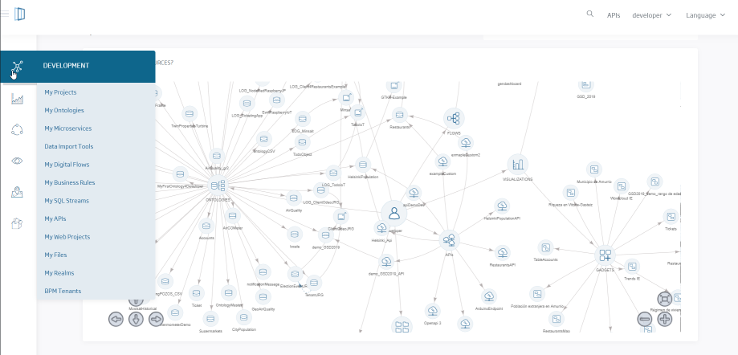

Octubre 2019:
Liberamos Onesait Platform bajo licencia Apache 2.0 y la
presentamos en un evento que cuenta mucho de nosotros...échale un ojo a este video.
Llevamos trabajando más de 9 años en el mundo IoT, Big Data, Smart Cities, Smart Energy.
Lo fundamental es que nuestra plataforma te convenza, y quieras ayudarnos a mejorarla
CloudLab es una instancia de la Plataforma montada sobre Azure Cloud en la que cualquiera puede usar de forma gratuita y sin limitaciones todas las capacidades de la Plataforma creando sus propios pilotos y desarrollos.
